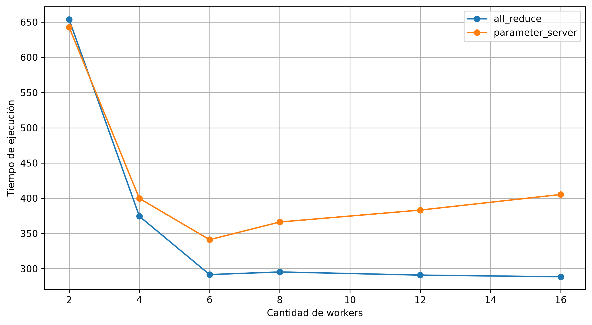
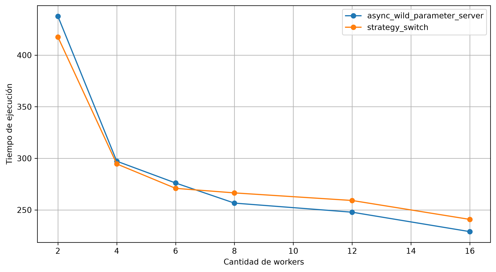
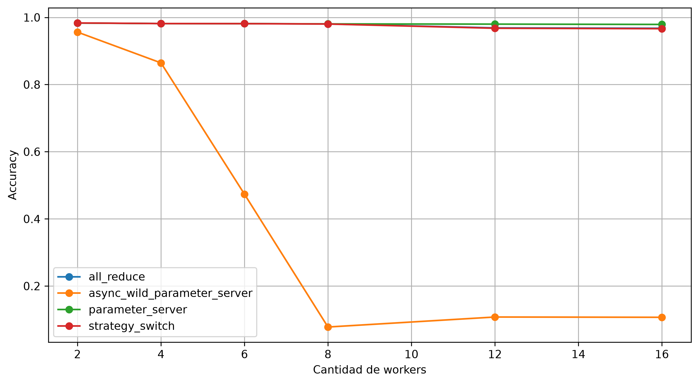
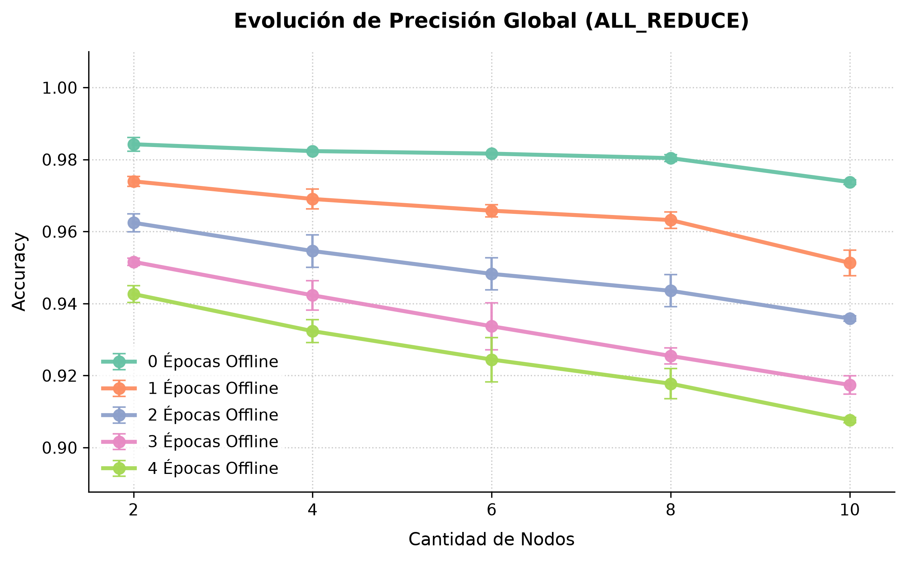

Sistema distribuido de entrenamiento de modelos de aprendizaje profundo en Rust para implementar y comparar estrategias de distribución.
Sobre conjuntos grandes, un entrenamiento puede llevar días en una sola máquina.
Datos, modelo y estados intermedios pueden no entrar en un solo dispositivo.
→ Repartir el cómputo entre nodos: entrenamiento distribuido.
TensorFlow (tf.distribute.Strategy) y PyTorch (DistributedDataParallel) envuelven el ciclo de sincronización en una sola llamada. Adentro quedan fijas cuatro decisiones:
¿Sincrónico o asincrónico?
¿Su estado vive en cada worker o en un nodo central?
¿Cómo se reparten los parámetros entre nodos?
¿Cómo viajan tensores y gradientes por la red?
ndarraycada nodo tiene el modelo completo
1 · el dataset se particiona
2 · cada worker calcula su gradiente local
3 · los gradientes se agregan (promedio)
4 · todas las réplicas aplican la misma actualización
O.N.O. se ubica en el primero.
Todos operan sobre la misma versión de θ. El más lento marca el ritmo.
Sin espera, pero un gradiente puede calcularse sobre θ desactualizado: client drift.
node · el mismo binario en cada máquina
1 · el orchestrator se conecta (Connect / Accept)
2 · cada nodo recibe su especificación y su rol
3 · el plano de datos queda entre los nodos
Cada capa guarda solo metadata: qué tramo del buffer le corresponde.
Particionar entre servidores = delimitar rangos.
Transmitir = reinterpretar memoria, sin serializar ni copiar.
workers y un servidor con los parámetros
1 · el worker obtiene θ del servidor
2 · calcula su gradiente local
3 · empuja el gradiente
4 · el servidor promedia y aplica el optimizador
5 · con varios servidores: una capa, un servidor
barrier: espera a los NW gradientesnon_blocking: aplica apenas llega
anillo lógico: se recibe del anterior, se envía al siguiente
1 · cada gradiente se divide en NW fragmentos
2 · reduce-scatter: NW−1 iteraciones sumando
3 · all-gather: NW−1 iteraciones copiando
4 · cada worker divide por NW y aplica el optimizador
Por iteración, cada worker envía 1/NW de su gradiente.
S: tamaño del modelo · R: ancho de banda.
PS con un servidor; delays de encolado, propagación y procesamiento despreciables.
Cambio cuando s ≤ 0,01 sobre una ventana de w = 6 pérdidas.
Valores del paper (elegidos empíricamente). O.N.O. usa la pérdida de entrenamiento máxima entre workers; el paper, la de validación.
fase 1 · anillo de All-Reduce
1 · el orchestrator registra la pérdida máxima por ronda
2 · s ≤ 1 %: envía Upgrade y Switch
3 · un nodo pasa a servidor con su tramo de θ
fase 2 · Parameter Server
El usuario elige la estrategia y nservers en training.json.
El orchestrator decide el momento del cambio.
JSON: poco frecuente, legible y depurable.
Tensores por reinterpretación de memoria, en f16, sin copias.
Gradiente plano en los workers; Adam o momentum después de agregar. Todas las réplicas mantienen el mismo estado sin intercambiarlo.
# orchestra-py · basado en local.py training = strategy_switch( addrs=ADDRS, nservers=1, dataset=LocalDataset(...), optimizer=GradientDescent(lr=0.01), loss_fn=Mse(), sync=NonBlockingSync(), store=BlockingStore(), max_epochs=50, batch_size=256, ) trained = orchestrate(model, training).wait()
Libera el GIL durante las llamadas bloqueantes.
capturas realestmux capture-pane · ejecución local con 4 nodos · 28/10/2026
All-Reduce · el anillo que eligió el orchestrator
Parameter Server · 3 workers, 1 servidor; «→ grads, ← params»
Strategy-Switch · durante el cambio (la TUI indica «switching W3 → PS»): la topología cambia en vivo
Partículas: mensajes en tránsito.
Subconjunto de MNIST (10.000 muestras), fuera de la campaña experimental.

Parameter Server: el servidor único es el cuello de botella; su costo crece linealmente con NW.
All-Reduce no se degrada, pero deja de mejorar: dsync → 2S/R acota la aceleración.

PS asincrónico y Strategy-Switch evitan el estancamiento del régimen sincrónico.
Pero el tiempo no vale nada si el modelo no aprende.

Strategy-Switch: exactitud similar a la de los sincrónicos, con tiempos similares a los del asincrónico.
WildStore: no se puede descartar que las escrituras sin protección contribuyan al colapso.
E epochs locales extra antes de cada sincronización.
Con E = 1, la exactitud cae ≈ 1 punto porcentual; empeora con más nodos.
En ese entorno, sin ganancia de tiempo que lo compense.
WildStoreLa sincronización centralizada es el cuello de botella.
Asincronismo y convergencia están en tensión directa.
Strategy-Switch logró el mejor balance evaluado.
Validada la corrección por convergencia, las diferencias de tiempo pueden atribuirse al algoritmo, salvo la excepción señalada para PS asincrónico.
10 min
reservados en la agenda
Gracias. ¿Preguntas?
grabación realEjecución previa del 28/10/2026, 1 captura por segundo con tmux. No es una ejecución en vivo.
Supuestos: mismo R en todos los nodos; encolado, propagación y procesamiento despreciables; placas full-duplex; S = Nparams × 2 bytes (f16).
Expresiones de elaboración propia a partir de la literatura citada.
Sumaba los gradientes en lugar de promediarlos: la tasa de aprendizaje efectiva escalaba con NW.
Al recuperar los pesos de los servidores no revertía el reparto de capas: modelo final desordenado.
Al conmutar, los fragmentos se asignaban en otro orden que el usado por el worker.
Ninguno rompía una prueba unitaria: cada componente hacía bien lo suyo. Los encontró la suite de benchmarks end-to-end.
Las diapositivas con diagramas avanzan por etapas. Volver atrás restaura el estado completo de la etapa, sin animación.